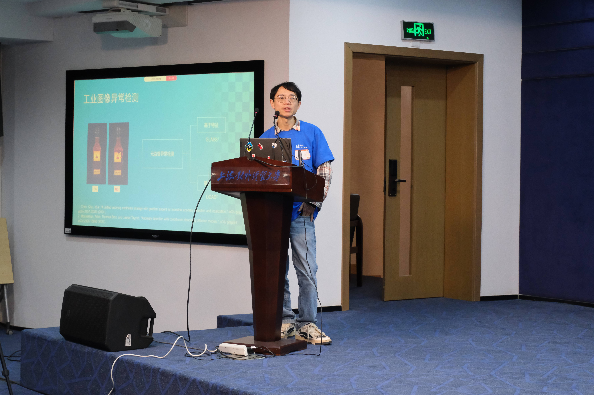
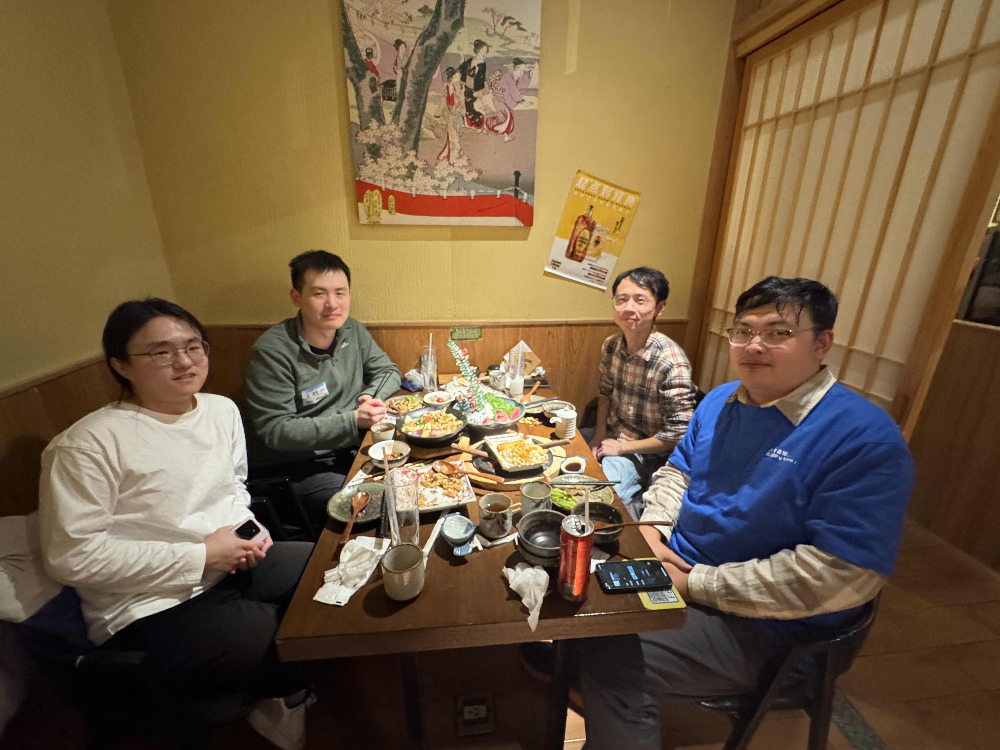
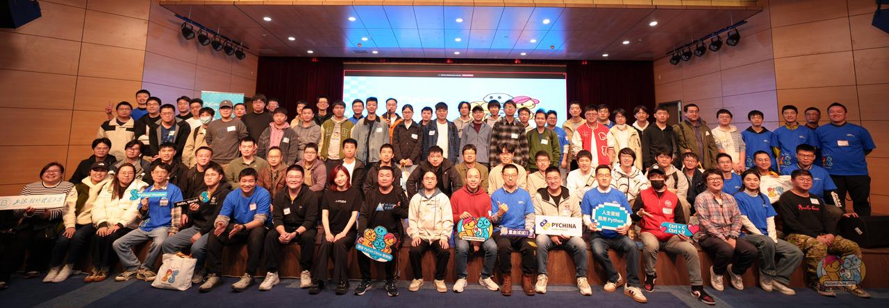
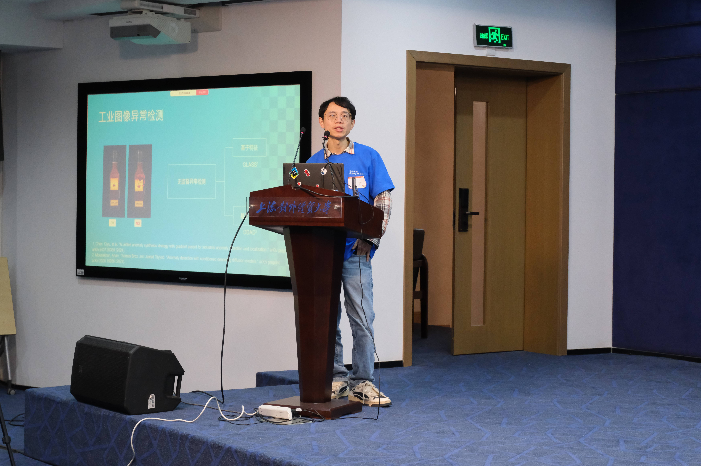
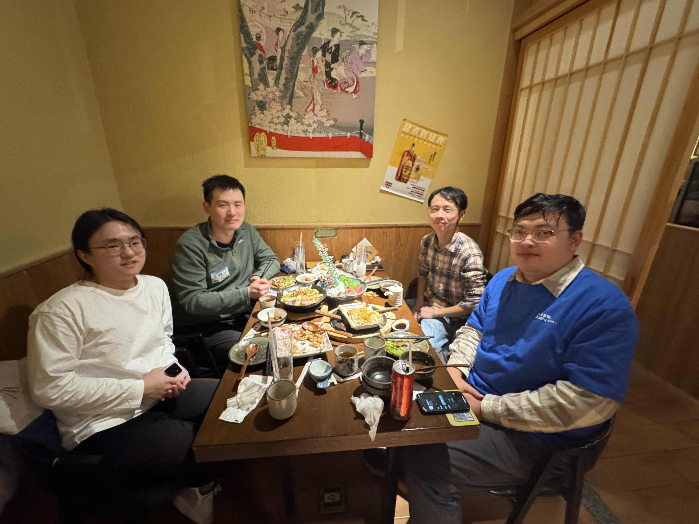
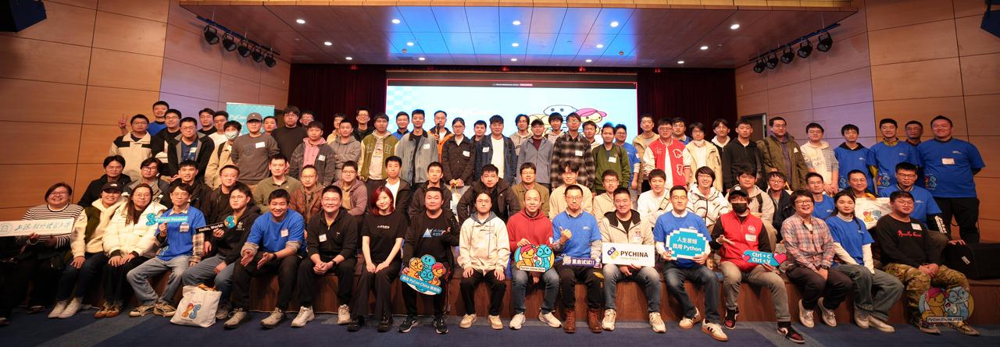

故地回响
今年春节，特意选了一天，回到了曾经待过六年的地方。在那里，我从11岁到17岁，度过了我的初中和高中，许多塑造我的生活片段都发生在那里。与以往不同，这次是我主动展开的一天，因为我突然意识自己对那个地方有点陌生。那种陌生感，让我反思：我是否太习惯于把每一个阶段的行为都当做是实现下一个阶段目标的手段？总把眼前的一切都当作手段，才让这个地方变得陌生。我变成了过客，而那些原本值得珍视的关系变成了迟早要淡的人际交往。
初中的时候，我从镇上的小学到县里的中学读书。那是我第一次从一个场域切换到另外一个场域。现在想来，那时面临着诸多挑战。学业上还有点跟不上，没有熟悉的伙伴，一到寒暑假就要回老家，像候鸟一样在两个世界之间迁徙。
但似乎那些挑战都因为一句“家里面送我出来读书不容易”而被掩饰。而我的确也感受到了他们的艰辛，所以很早就学会了为难自己。刚吃了饭，我就开始做作业。每天都在学习，忘了很多的烦恼。只要取得好分数，其他似乎都不重要了。
于是乎，我把那个地方仅仅视为考取好分数的手段，把自己当作那里的过客，我迟早要离开那里的。我习惯于把整个过程看作实现下一个阶段目标的工具。而这种思维模式让我从未真正珍惜过我的同学和朋友。
我太习惯于这样思考了：每一个阶段的行为，都是为了实现下一个阶段的目标。我不享受过程，也不在珍惜过程，更没有珍惜过程中的人。像一个情感上的“渣男”，无意识地、却也在不断地，辜负着那些善意。
最近，偶然看到一段采访，大致意思是：“人生途中，若有幸遇见能让你更快乐、更优秀、更像自己的人，一定要好好珍惜。世事浮沉，唯有他们，岁岁常相伴。”1 内心很受触动，那些让我感觉是一个更好版本的自己的人，真的值得我好好珍惜。工作来来去去，机会来来去去，但他们却一直都在。
现在回想起来，内心应该充满感激。初三的那个暑假，有人带我去网吧上网，借此我和很多人保持了不断地联系。高三的那个暑假，有人邀请我去她家玩，我才与很多人建立了深厚的羁绊。直到现在，他们都还在给我支持。
这次回去，让我开始思考：在现代社会，我们是否可以重新定义“家”的概念？每个我们待过三年以上——或者更短——的地方，那些与我们建立深厚羁绊的人，实际上也是我们的家人。不一定非要有血缘关系才叫家人。这种没有血缘的关系，或许恰好是我们构建心灵的家园时所不可或缺的。
他们的确值得我花时间每年相聚。就像家人一样，他们会一直留在我的身边。那些给我关怀的人，我也应该多关怀他们，给予他们支持和帮助。
回首过去，重回故地，其实是在通过反思更好地理解自己、认识自己。人生其实并没有什么固定的价值或意义，这些价值和意义都是我们自己建构的。现在的我在试着享受这个过程：不断地发现自己、探索自己、认识自己。就像我最近的想法一样，我一直在“成为自己”。
以前总觉得人生很短暂，现在却觉得人生还很漫长。这不是说不需要珍惜，而是要放慢脚步，好好享受这个过程。人生是一个漫长的旅程，人会在某个时刻突然觉醒。2对我来说，今年就是这样一个觉醒的时刻。我开始意识到生命到底是什么，开始建立自己的生命观，开始知道如何去展开自己的生命。
人生还很长，我需要有耐心，好好过完这一生。3而那些在我生命中出现过的人，那些让我更像自己的人，将是我这一生中最珍贵的陪伴。


-
When you meet people along the way in your life that you just feel bring you to a happier place or elevate yourself or make you feel like a better version of yourself, you need to keep those people close. And jobs come and go, opportunities come and go, but your friends and your family are always there. ↩
-
人觉醒，接受自己偶然有限性的生存（“坤以俟命”），并由此奋力生存，不怨天，不尤人，下学而上达（“乾以立命”）。 ↩
-
抽象的功利主义用目标的抽象和路径的缺乏剥夺了过程的意义。我们感受到的不是脚踏实地的安然、投身日常的平静和稳步前行的欣喜，而是现实的具体及琐碎与“空洞且抽象的功利目标”之间的巨大鸿沟，其后果就是焦躁、无力与绝望。当所有目的都变成手段，我们就进入了无目的的迷茫，最终我们丧失的，不仅是做事的耐心与勇气，还有真实生活的感知力。 ↩
 
